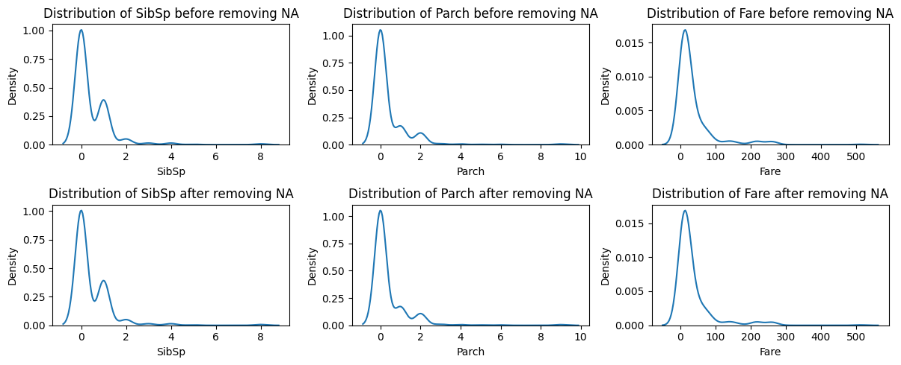
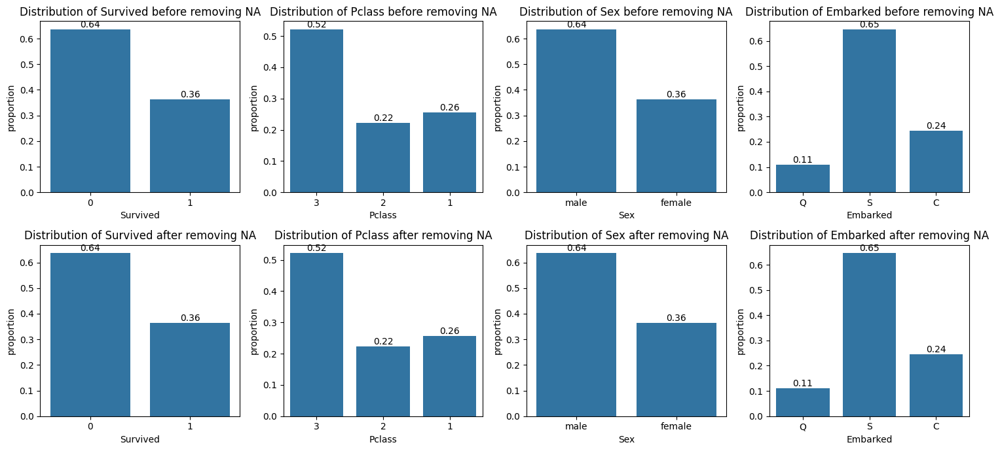
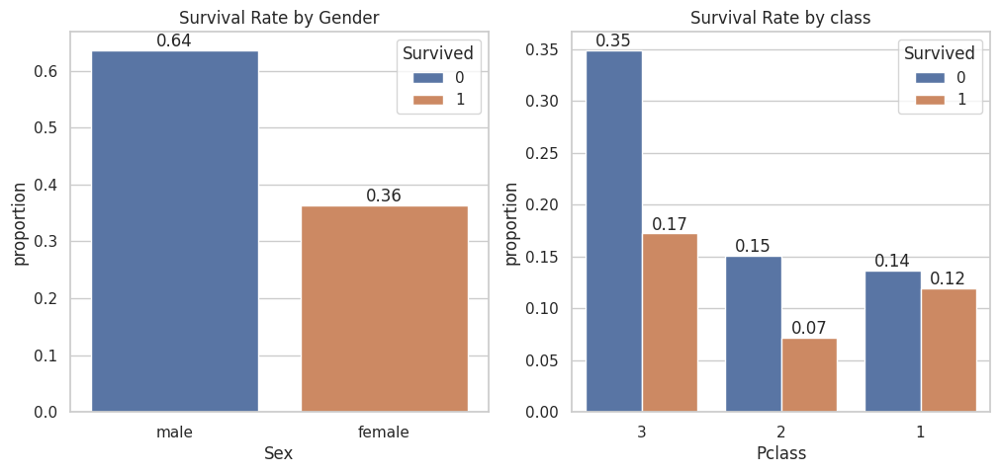
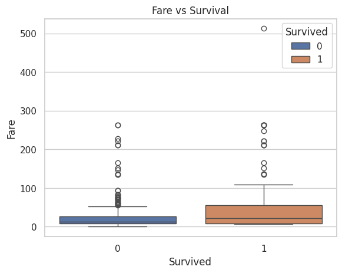
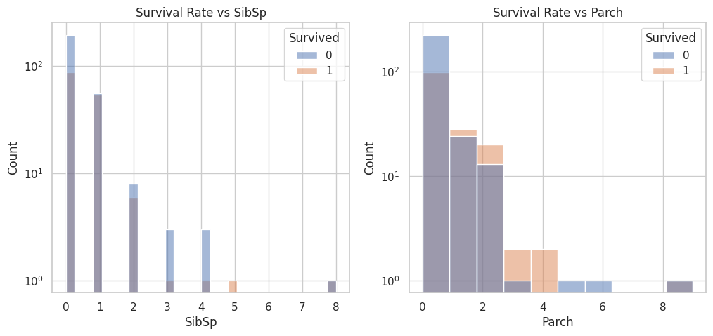
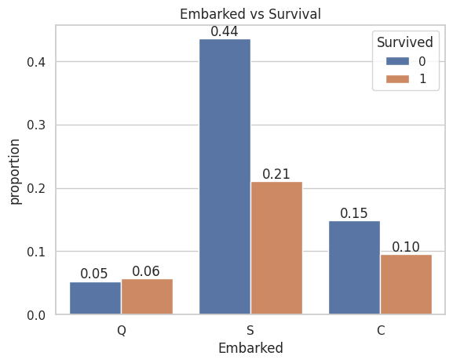
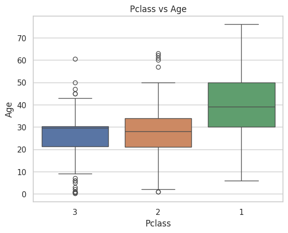
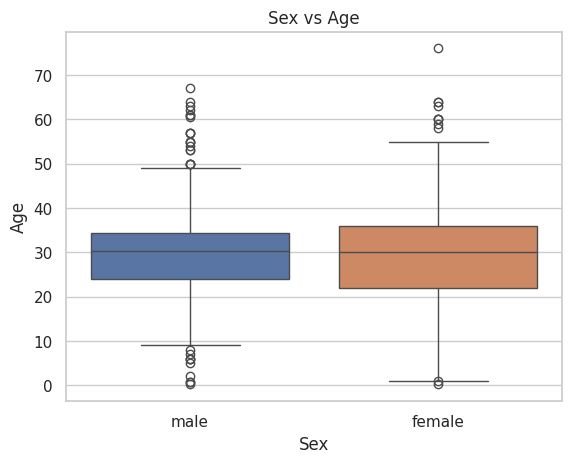
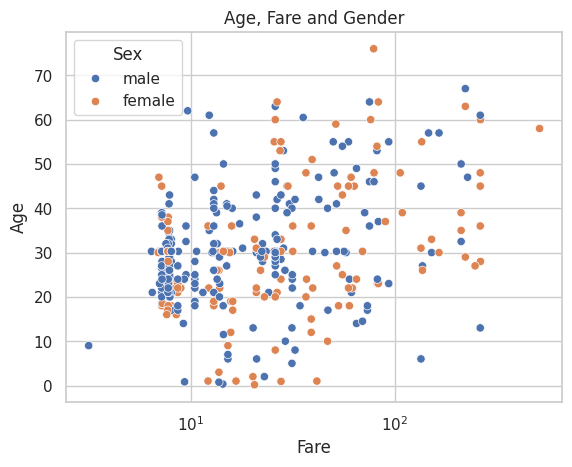
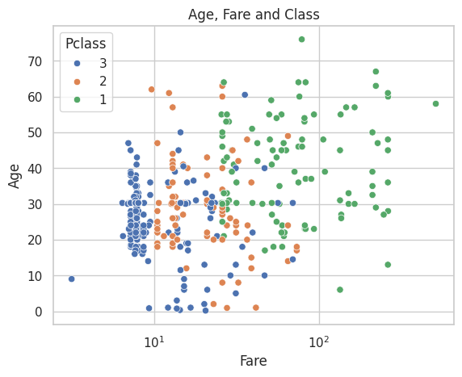

Exploratory Data Analysis & Unsuperivsed Learning M1-DAS Lecturer: HAS Sothea, PhD
Student’s name: David James
Objective: Preprocessing is important in data related tasks. In this TP, you will explore different challanges you may encounted during when performing data preprocessing. We will discuss reasonable solution to these challanges.
The Titanic dataset contains information on the passengers aboard the RMS Titanic, which sank in \(1912\). It includes details like age, gender, class, and survival status.
I bet you have heard about or watched Tiannic movie at least once. How about we take a look at the real dataset of Titanic available in Kaggle. For more information about the dataset and the columns, read Titanic dataset. Let’s import it into our Jupyter Notebook by running the following code.
Warning: Looks like you're using an outdated `kagglehub` version (installed: 0.3.5), please consider upgrading to the latest version (0.3.6).
Downloading from https://www.kaggle.com/api/v1/datasets/download/surendhan/titanic-dataset?dataset_version_number=1...
Study the impact of missing value removal on the quantitative variables.
data.isna().sum()
0
Survived
0
Pclass
0
Name
0
Sex
0
Age
86
SibSp
0
Parch
0
Ticket
0
Fare
1
Cabin
327
Embarked
0
For column ‘Fare’, there is only one missing value. Therefore, we can simply drop it or impute it.
For column ‘Cabin’, around \(80\%\) of this column are missing values. It is not helpful to try to impute or remove the rows with missing values. Threfore, we simply drop this column.
The main column to be studied is ‘Age’. Therefore, we will study the impact of missing value removal from this column.
from sklearn.impute import SimpleImputersip = SimpleImputer(strategy='mean')data['Fare'] = sip.fit_transform(data[['Fare']])data = data.drop(columns=['Cabin'])
data.describe()
Age
SibSp
Parch
Fare
count
418.000000
418.000000
418.000000
418.000000
mean
30.272590
0.447368
0.392344
35.627188
std
12.634534
0.896760
0.981429
55.840500
min
0.170000
0.000000
0.000000
0.000000
25%
23.000000
0.000000
0.000000
7.895800
50%
30.272590
0.000000
0.000000
14.454200
75%
35.750000
1.000000
0.000000
31.500000
max
76.000000
8.000000
9.000000
512.329200
Graphs
import matplotlib.pyplot as pltimport seaborn as snsquant_cols = data.select_dtypes(include="number").columnsquant_cols_, axs = plt.subplots(2, 3, figsize=(12, 5))for i, va inenumerate(quant_cols[1:]): sns.kdeplot(data=data, x=va, ax=axs[0,i]) axs[0,i].set_title(f'Distribution of {va} before removing NA') sns.kdeplot(data=data.dropna(), x=va, ax=axs[1,i]) axs[1,i].set_title(f'Distribution of {va} after removing NA')plt.tight_layout()plt.show()

Study the impact of missing value removal on the qualitative variables.
data.dropna().describe()
Age
SibSp
Parch
Fare
count
418.000000
418.000000
418.000000
418.000000
mean
30.272590
0.447368
0.392344
35.627188
std
12.634534
0.896760
0.981429
55.840500
min
0.170000
0.000000
0.000000
0.000000
25%
23.000000
0.000000
0.000000
7.895800
50%
30.272590
0.000000
0.000000
14.454200
75%
35.750000
1.000000
0.000000
31.500000
max
76.000000
8.000000
9.000000
512.329200
Graphs
qual_cols = data.drop(columns=['Name', 'Ticket']).select_dtypes(include="object").columnsqual_cols_, axs = plt.subplots(2, len(qual_cols), figsize=(15, 7))for i, va inenumerate(qual_cols): sns.countplot(data=data, x=va, ax=axs[0,i], stat="proportion") axs[0,i].set_title(f'Distribution of {va} before removing NA') axs[0,i].bar_label(axs[0,i].containers[0], fmt="%.2f") sns.countplot(data=data.dropna(), x=va, ax=axs[1,i], stat="proportion") axs[1,i].set_title(f'Distribution of {va} after removing NA') axs[1,i].bar_label(axs[1,i].containers[0], fmt="%.2f")plt.tight_layout()plt.show()

Conclude the dynamic of the missing values and handle them.
Based on our analysis, removing missing values does not influence other columns very much because the distribution of these columns before and after removing NA look nearly identical. So, the dynamic or the nature of this missing vales is Missing Completely At Random (MCAR).
To handle these missing values, we can either drop them or simply impurte them using mean value.
We are primarily interested in exploring the relationship between each column and the likelihood of passenger survival. The following questions will guide you through this exploration. In each question, try to give some comments on what you observe in the graphs.
A. Survival Analysis: How did the survival rates vary by gender? How about by class?
Hint: Create bar charts or stacked bar charts showing the survival rates for different genders and different passenger classes.
x, axs = plt.subplots(1, 2, figsize=(12, 5))sns.set(style="whitegrid")sns.countplot(data=data, x='Sex', hue='Survived', ax=axs[0], stat ="proportion")axs[0].set_title('Survival Rate by Gender')axs[0].bar_label(axs[0].containers[0], fmt="%.2f")axs[0].bar_label(axs[0].containers[1], fmt="%.2f")sns.countplot(data=data, x='Pclass', hue='Survived', ax=axs[1], stat ="proportion")axs[1].set_title('Survival Rate by class')axs[1].bar_label(axs[1].containers[0], fmt="%.2f")axs[1].bar_label(axs[1].containers[1], fmt="%.2f")plt.show()

The graph clearly shows that gender is strongly related to the likelihood of survival, as all women survived while none of the men did.
It appears that 1st class passengers had a higher chance of survival compared to 3rd class passengers, where only one-third of the passengers survived the incident.
B. Fare and Survival: Is there a relationship between the fare paid and the likelihood of survival?
Hint: Create boxplots to analyze the fare distribution among survivors and non-survivors.
sns.boxplot(data=data, x='Survived', y='Fare', hue='Survived')plt.title('Fare vs Survival')# plt.yscale('log')plt.show()

The above conditional boxplot indicates that passengers who spent higher fares appeared to have a better chance of survival, while those who did not survive tended to spend lower fares.
C. Family Size: How does family size (number of siblings/spouses and parents/children) impact the chances of survival?
x, axs = plt.subplots(1, 2, figsize=(12, 5))sns.set(style="whitegrid")sns.histplot(data=data, x='SibSp', hue='Survived', ax=axs[0])axs[0].set_title('Survival Rate vs SibSp')axs[0].set_yscale('log')sns.histplot(data=data, x='Parch', hue='Survived', ax=axs[1])axs[1].set_title('Survival Rate vs Parch')axs[1].set_yscale('log')plt.show()

These graphs indicate that passengers with smaller family sizes (1-3 members) had a slightly higher chance of survival compared to those with larger family sizes (4 or more members).
D. Embarkation Points: How do survival rates differ based on the port of embarkation (C, Q, S)?
ax = sns.countplot(data=data, x='Embarked', hue='Survived', stat="proportion")ax.set_title('Embarked vs Survival')ax.bar_label(ax.containers[0], fmt="%.2f")ax.bar_label(ax.containers[1], fmt="%.2f")plt.show()

This graph indicates that passengers from Queenstown had a higher chance of survival compared to those from Cherbourg, while those who embarked from Southampton had the lowest chance of survival.
E. Pclass and Age: How does passenger class correlate with age?
sns.boxplot(data=data, x='Pclass', y='Age', hue='Pclass')plt.title('Pclass vs Age')plt.show()

It’s evident that older passengers predominantly occupy the VIP class, while younger individuals are mostly found in the third class.
F. Gender and Age: How does age distribution differ between male and female passengers?
sns.boxplot(data=data, x='Sex', y='Age', hue='Sex')plt.title('Sex vs Age')plt.show()

Age appears to be similarly distributed among both male and female passengers.
G. Age, Fare and Gender: View the connection of Age, Fare and Gender in one graph.
ax = sns.scatterplot(data=data, x='Fare', y='Age', hue='Sex')ax.set_title('Age, Fare and Gender')ax.set_xscale('log')plt.show()

This graph suggests that older passengers tend to pay higher fares, while younger individuals are more likely to pay lower fares. Additionally, gender appears to be uncorrelated with either Fare or Age, as no distinct patterns or clusters are formed in this scatterplot.
H. Age, Fare and Class: View the connection of Age, Fare and Class in one graph.
ax = sns.scatterplot(data=data, x='Fare', y='Age', hue='Pclass')ax.set_title('Age, Fare and Class')ax.set_xscale('log')plt.show()

This further confirms that first-class passengers paid higher fares compared to those in lower classes. They are predominantly older and wealthier individuals
I. Based on your analysis, which variables appear to have the greatest impact on the likelihood of survival?
Conclusion: According to this dataset, the most impactful variable on the survival chance is gender, where females had a significantly higher chance of survival than males. The second most impactful variable appears to be passenger class (Pclass) or fare. It is shown in qusetion A that first-class passengers had a better chance of survival than those in lower classes.
Additional Observations:
Embarkation Point: Passengers who embarked from Cherbourg (C) had a slightly higher survival rate compared to those who embarked from Southampton (S) or Queenstown (Q).
Family Size: Passengers traveling with smaller family sizes (SibSp and Parch) had a higher chance of survival compared to those with larger families.